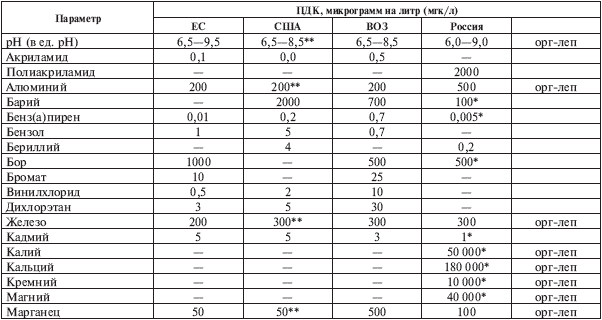
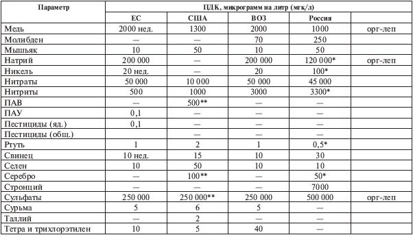
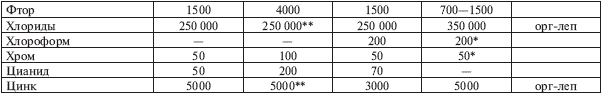
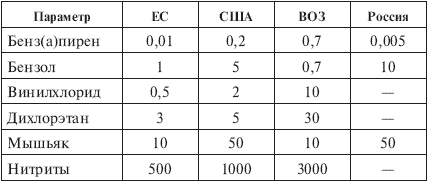

Стандарты на питьевую воду .

Нормативы на питьевую воду стран ЕС (Западной Европы) и США, рекомендации Всемирной организации здравоохранения и отечественные стандарты сведены воедино в табл. 3.2. Эта таблица определяет термин «питьевая вода», указывая, какие компоненты могут присутствовать в воде и в каких количествах. Напомню, что эти количества примесей вредных веществ и полезных субстанций (которые при превышении норматива тоже становятся вредными) называются ПДК – предельно допустимой концентрацией.
Параметры питьевой воды делятся на три группы: органолептические свойства, показатели бактериального и санитарно-химического загрязнения. Про органолептику я уже говорил – это простейшие оценки запаха, вкуса, цвета и мутности, которые мы, потребители, можем, в принципе, выполнить сами. ПДК на бактериальное загрязнение выглядит исключительно простым: нормативы ЕС, США и ВОЗ определяют, что его вообще не должно быть. Российский стандарт дает такие цифры: не более ста микроорганизмов на один кубический сантиметр и не более трех бактерий типа кишечных палочек в одном литре воды. По сути дела, отечественные и зарубежные требования одинаковы, если учесть ничтожный размер бактерий и вирусов и практическую невозможность убедиться, что они полностью и с гарантией отсутствуют в воде. Таким образом, мы сосредоточимся на химии, которую на глаз, без трудоемких анализов, не определить. В табл. 3.2 представлены ПДК для легких и тяжелых металлов, неорганических и органических соединений; первым указан параметр pH, а затем вещества (в алфавитном порядке).
Таблица 3.2. Стандарты на питьевую воду.



Комментарии (к таблице 3.2).
1. Прежде всего напомню, что ПДК в ней даны в мкг/л (в микрограммах, или миллионных долях грамма на литр). По этой причине диапазон представленных концентраций огромен. Скажем, по стандарту ЕС присутствие бенз(а)пирена допускается в размере 0,01 мкг/л (или 10 нг/л), для алюминия норма 100 мкг/л (или 0,1 мг/л), а натрий, сульфат и хлор могут присутствовать в воде в количествах 200 000–250 000 мкг/л (то есть 200–250 мг/л, или 0,2–0,25 г/л). Эти цифры сразу ориентируют нас относительно каждого из перечисленных в таблице веществ. Если ПДК составляет сотни тысяч микрограмм, то вещество, в принципе, не является вредным. Это, скорее всего, необходимый нам макроэлемент (см. табл. 2.2). Но оно становится вредным для человека в очень больших дозах. Если ПДК составляет сотни-тысячи микрограмм, то такое вещество может оказаться либо, скажем, нитратом, либо металлом (например, медь, железо), которые становятся отравой при превышении ПДК. Ну а если ПДК в пределах единиц, десятых и сотых долей микрограмма, то такая субстанция почти всегда несомненный яд (бензол, винилхлорид, мышьяк, ртуть, свинец и так далее).
2. В таблице представлены различные группы веществ: легкие и тяжелые металлы (к последним экологи относят многие металлы, например алюминий, титан, хром, железо, никель, медь, цинк, кадмий, свинец, ртуть и др.), неорганические и органические соединения. В настоящей таблице данные обобщены и наиболее соответствуют российскому и европейскому стандартам. В нормативах США и ВОЗ органические вещества расписаны подробнее. Так, в стандарте США перечислено около тридцати видов опасной органики. Самыми детальными являются рекомендации ВОЗ, в которых есть следующие отдельные списки: неорганические вещества (в основном тяжелые металлы, нитраты и нитриты); органические вещества (около тридцати), пестициды (более сорока); вещества, применяемые для дезинфекции воды (в основном различные соединения брома и хлора – более двадцати); вещества, влияющие на вкус, цвет и запах воды. Также перечислены вещества, которые не влияют отрицательно на здоровье при предельно допустимых концентрациях в воде – к ним, в частности, относятся серебро и олово.
3. В российском ГОСТе [1] нет ПДК для ряда веществ, отмеченных в зарубежных нормативах. Я полагаю, что их нет в ГОСТе в силу его древности (как-никак 1982 год!), но в новых Санитарных правилах – в СанПиНе 2.1.4.559-96 – эти цифры присутствуют, и нужно подчеркнуть, что требования к качеству питьевой воды в РФ должны соответствовать именно этому новому СанПиНу. В России имеются и другие нормативные документы, в которых приведен список более чем на 1300 вредных веществ и их ПДК. По большинству показателей наш стандарт либо соответствует зарубежным, либо устанавливает нормативы в одних случаях более жесткие, в других более мягкие. Кстати, замечу, что ныне действующие нормативы ЕС, США и ВОЗ сформировались лишь в последнее десятилетие. Но даже в самых детально расписанных рекомендациях ВОЗ против некоторых веществ стоит пометка: «Нет надежных данных для установления норматива». Это означает, что работа продолжается, и в этой связи вспомните, о чем было сказано выше: мы знаем сотни тысяч соединений, но лишь немногие из них изучены с точки зрения влияния на человеческий организм. Особенно влияния в малых дозах, но длительного, постоянного, многолетнего…
В дополнение к комментариям к таблице сравним ряд показателей ПДК, приведенных в российском и зарубежных стандартах. Возьмем, например, алюминий: ПДК на него составляет 200 мкг/л по зарубежным нормам и 500 мкг/л – по российским. Несмотря на расхождение в два с половиной раза, это величины одного порядка. Обратимся далее к железу (200–300 мкг/л), к меди (1000–2000 мкг/л), ртути (1–2 мкг/л), свинцу (10–30 мкг/л) и увидим, что для этих веществ выполняется разумное соответствие по ПДК, то есть различия не более чем в два-три раза.
А теперь приведем (табл. 3.3) нормативы на самые ядовитые вещества:
Таблица 3.3. Нормативы на самые ядовитые вещества

Разница потрясает! Как минимум в пять-шесть раз, а в некоторых случаях – в десять, двадцать, сто! Как видим, российские нормативы не столь плохи. ПДК мышьяка у нас такая же, как в США, норматив на бенз(а)пирен жестче, чем в Европе и США, и только бензол может являться причиной для сомнений в правильности показателей ГОСТа.
Самое странное, что большие значения ПДК по бенз(а)пирену, винилхлориду и дихлорэтану рекомендованы не кем-нибудь, а ВОЗ! Что это означает? Что в ЕС, США и России переоценили опасность этих ядов? А почему европейский ПДК по бензолу и мышьяку немного меньше американских и российских? Может быть, и у нас, и в Штатах уже привыкли к этой отраве и реагируют на нее не так болезненно, как европейцы? А может быть, просто ошибка в источнике, откуда я взял информацию?
Есть у меня гипотеза на этот счет. ВОЗ обобщает гигантский объем исследований по вредным веществам и дает рекомендации, которые научны и объективны, однако ответственность ВОЗ чисто моральная – это неправительственная организация, не имеющая прямого отношения к санитарным службам стран мира. А санитарные службы несут юридическую ответственность перед своими гражданами и правительством! Поэтому, возможно, они на всякий случай ужесточают ПДК, дабы не нажить себе неприятностей. Но это лишь гипотеза. В справочнике [17] различия ПДК никак не комментируются, приведены лишь таблицы, в них – числа, и все.
Теперь давайте вдумаемся в смысл самого понятия предельно допустимые концентрации. Допустимые, но что значит предельно? Надежно ли эти пределы установлены? Вдруг они определяются не заботой о нашем здоровье, а техническими и финансовыми возможностями очистки вод и их регулярного мониторинга? Сопоставление нормативов (см. табл. 3.2) доказывает, что это маловероятно. Да, есть расхождения, но в целом наблюдается разумное соответствие по ПДК, и трудно не доверять сразу всем стандартам – и российским, и американским, и европейским, тем более – рекомендациям ВОЗ, которая не занимается очисткой воды и не имеет в этой связи финансовых проблем. Это одна сторона вопроса, а другая заключается в том, что береженого бог бережет. Можно представить ситуацию чисто теоретически, ибо ни о чем подобном я не слышал и не читал – когда из крана, пусть в предельно допустимых концентрациях, выльется все, что названо в табл. 3.2. Все, или половина, или треть… Причины могут быть самые разнообразные: авария на станции водоочистки, природный катаклизм, крушение танкера с нефтью, залповый сброс вредоносных веществ, диверсия исламских террористов, чья-то небрежность или злой умысел… Помните, что мы живем в техногенную эпоху, а это значит, что лучше подстраховаться от негативных воздействий прогресса.
Термин «ПДК» – «предельно допустимые» – означает следующее. Ошибочно думать, что предельно допустимая доза – это та доза, проглотив которую вы еще выживете, а вот если превысите, может наступить смерть или как минимум жуткая болезнь. Но это совсем не так. ПДК определяется как доза вредного вещества, которую можно без последствий принимать с водой каждые сутки на протяжении всей жизни. При этом учитывается, что человек выпивает 2–2,5 л воды в день и что вредные вещества поступают не только с водой, но также с пищей и воздухом. В приложении 2 описано, как устанавливается ПДК, и в качестве примера даны результаты исследований некоторых вредных и не очень вредных субстанций.
Однако напомню, что кроме среднестатистического человека, взрослого и относительно здорового, на планете живут дети, старики и больные люди. Они составляют почти половину населения. Эти категории наиболее уязвимы, а влияние вредных веществ на них наименее изучено. Собственно, такие исследования нужно проводить сотню лет в четырех-пяти поколениях и в разных странах, и тогда, быть может, выяснится, как влияет тот или иной вредоносный фактор на продолжительность жизни и какие вызовет заболевания. Можно считать, что в двадцатом столетии мы лишь приступили к этой гигантской работе.
Теперь на основании вышеизложенного мы можем дать более или менее внятное определение питьевой воде высокого качества:
– это вода с соответствующими органолептическими показателями – прозрачная, без запаха и с приятным вкусом;
– это вода с pH = 7–7,5 и жесткостью не выше 7 ммоль/л;
– это вода, в которой суммарное количество полезных минералов не более 1 г/л;
– это вода, в которой вредные химические примеси либо составляют десятые-сотые доли их ПДК, либо вообще отсутствуют (то есть их концентрации настолько малы, что лежат за гранью возможностей современных аналитических методов);
– это вода, в которой практически нет болезнетворных бактерий и вирусов (то есть опять же их концентрации так малы, что лежат за гранью возможностей аналитических методов).